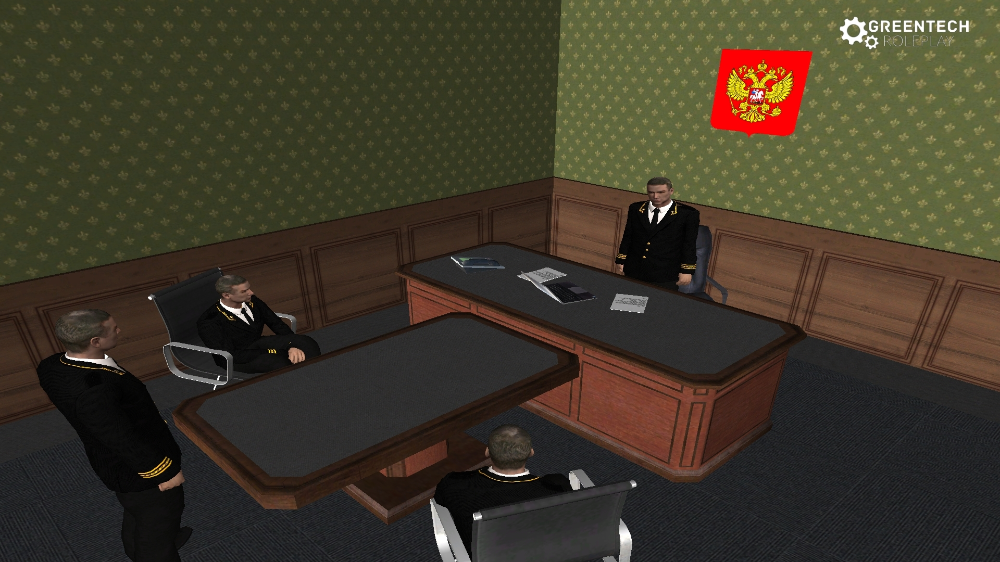
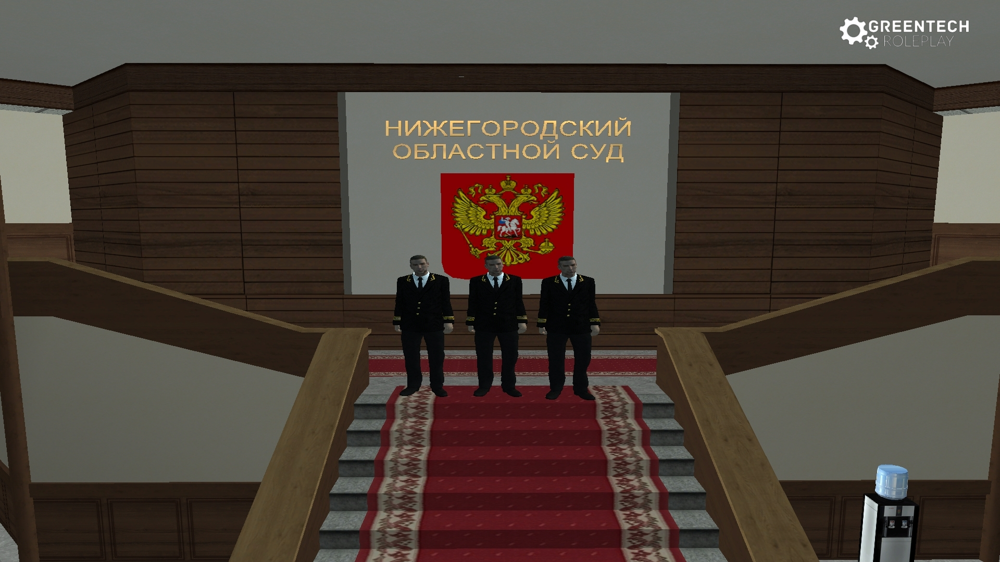
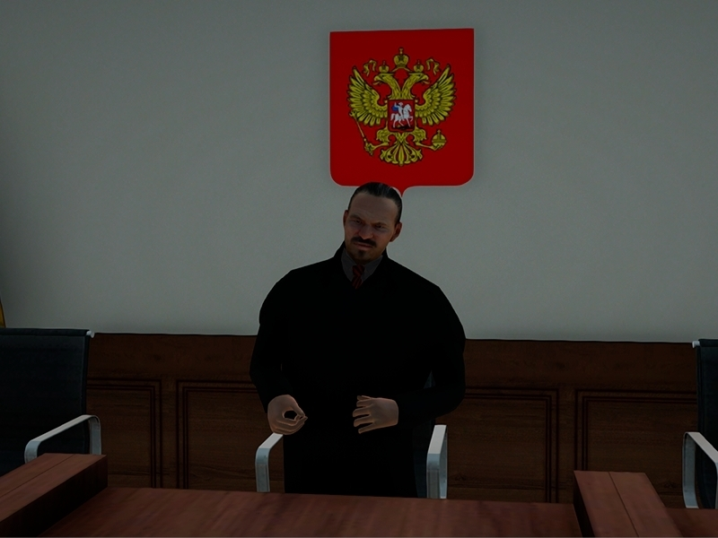

Судебная организация Нижегородской области
О фракции
Судебная организация — это объединение ключевых публично-правовых институтов, образующих систему юстиции Российской Федерации. Её предназначение заключается в комплексной реализации государственной функции по осуществлению правосудия, принудительному исполнению актов судебной власти, обеспечению гарантий права на квалифицированную юридическую помощь.
Структура судебной организации
Нижегородский гарнизонный военный суд
Нижегородский областной суд
Палата адвокатов Нижегородской области
ГУФССП России по Нижегородской области
Судебная организация в игре
Погрузитесь в атмосферу судебной системы вместе с нами. Ниже представлены моменты из жизни судей, адвокатов и работников аппарата суда.

Скриншот 1
Скриншот 2
Скриншот 3